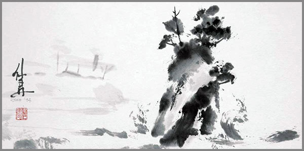

29. Ժամանակի Մեջ Մնացած Հետքերը Ոչպես Լռելու ՈՒսուցիչներ
 |
Ուշադրությունը միշտ գնում է դեպի աղմուկը, դեպի իրադարձությունը, դեպի ձայնը:
Բայց ի՞նչ է տեղի ունենում, երբ աղմուկը հանդարտվում է: Երբ ընկած քարի տեղում մնում է միայն դրանից առաջացած մի կլոր հետք: Այդ կլորատը` այդ թաց հետքը, արդեն իրադարձություն չէ: Այն ավելին է: Այն իրադարձության ձայնի բացակայությունն է: Դա այն անտեսանելի ձևն է, որ թողնում է ինչ-որ բան, երբ այն հեռանում է:
Այս ամենը հետաքրքրվածություն է այդ ձևերով՝ ժամանակի մեջ մնացած այն աննշան խոտորվածություններով, որոնք՝ թվում է թե ոչինչ չեն ասում, քանի որ նրանց ձայնը վաղուց անցել է: Դա այն պատճառով չէ, որ նրանք լուռ են, այլ այն պատճառով, որ մենք մոռացել ենք լռության լեզուն:
Յուրաքանչյուր հետք՝ լինի դա չասված խոսքի կշիռը օդում, չգնացած ճանապարհի ուրվագիծը քարտեզի վրա կամ սխալ ուղղությամբ ուղարկված բառի էլեկտրոնային ալիքը, կրում է իր սեփական ճշմարտությունը: Այն պահված է ոչ թե իր նյութում, այլ իր բացակայության ճիշտ ձևի մեջ: Այդ ճիշտ ձևն ունի իր բառապաշարը, իր քերականությունը: Այն չի սովորեցնում բարձրաձայն: Այն սովորեցնում է լռել, որպեսզի լսվի այն, ինչ մնացել է եղածից հետո:
Այս էջերը մի փորձ են վերսովորելու այդ քերականությունը: Սկսելով անտեսանելի ճեղքերից և անցնելով օտար տիեզերքների ներհոսքով՝ մենք կհասնենք նրան, որ լռելն այլևս գաղափար չի լինի, այլ միակ իրականությունը, որի մեջ կարելի է շնչել:
Պատրաստ չե՞ք: Այդպես էլ պետք է: Եկեք սկսենք առանց պատրաստ լինելու:
Դեպի այլ իրականություն տարած ուղին այն է, որ երևում է միայն անցնելուց հետո:
Աղմուկից հետո մնացած հետքը
1802 թվականին ֆրանսիացի գիտնական Ժոզեֆ Գեյ-Լյուսակը մի օրենք հայտնաբերեց փակ համակարգում գտնվող իդեալական գազի վիճակի մասին, որի համաձայն այդ գազը ջերմաստիճանի փոփոխության դեպքում այնպես է փոխում իր ծավալը, որ համակարգում ճմշումը մնում է հաստատուն, մինչև համակարգի ֆիզիկական կայունության խաթարումը:
Այդ օրենքը՝ V₁/T₁ = V₂/T₂, այժմ այլևս ֆիզիկական երևույթ չէ: Այն հուշարձան է՝ մաքուր, վերացական հարաբերակցություն, որը գոյություն ունի ժամանակից դուրս: Նրա պարամետրերը՝ ծավալն ու ջերմաստիճանը, այլևս չեն վերաբերում որևէ կոնկրետ գազի: Դրանք դարձել են երկու իդեալական մեծությունների անուններ, որոնք պահպանում են կատարյալ հավասարակշռություն և դրա վրա կիրառվում է օրենքը՝ որպես չափանիշ:
Աղմուկը ստեղծում է իր սեփական տարածությունը՝ լցված ալիքներով, թրթիռներով, շեղումներով: Բայց երբ այն հեռանում է, այդ տարածությունը չի վերադառնում իր նախնական դատարկությանը, այլ մնում է ձևափոխված՝ Ինչպես հիշողության թելը, որ մնում է նյութի վրա, երբ բռնկումն անցնում է: Դա իրադարձություն չէ: Այն իրադարձության անտեսանելի ծավալն է, նրա զանգվածն է առանց քաշի կամ արձագանքն է առանց ձանի:
Այս հետքերը չեն պատկանում անցյալին: Նրանք ապրում են ներկայի մեջ որպես անավարտ հարաբերություններ իրերի միջև: Սեղանին դրված, բայց չխմված սուրճի բաժակը, անավարտ նամակի կուրսորը, որ կարկամել է էկրանին, շարժումներ բառերի հնարավորությունների անտեսանելի դաշտում՝ սրանք դադարեցված պահեր են, որոնք շարունակում են պտտվել ինչ-որ զուգահեռ իներցիաներով:
Մենք մոլորված ենք, որովհետև կարծում ենք, թե լռությունը դատարկություն է: Բայց իրականում ամենաուժեղ պատմությունները գրվում են հենց այդ «դատարկության» մեջ՝ օգտագործելով տառեր, որոնք կազմված են լույսի բացակայությունից, ձայնի բացակայությունից, շփման բացակայությունից: Այդ տառերով է գրված այն, ինչ երբեք չասվեց, բայց միշտ զգացվեց:
Աղմուկից հետո մնացած հետքը չի պահանջում վերծանում: Այն պահանջում է ընդունում այնպես, ինչպես ականջը՝ երբ դադարում է լսել ձայները և սկսում է լսել իր լսողությունը:
Ճանապարհ, որ հազիվ շոշափվում է...
Լռիր:
Մի փորձիր հավաքել մտքերդ:
Այնպես արա, ինչպես օդերևութաբանը՝ թող դիտարկիչը անշարժ մնա, և թող քամին շարժի ճյուղերը:
Նայիր ինքդ քեզ՝ այնպես, ինչպես նայում ես ափի գծին, երբ ալիքը նահանջում է: Ի՞նչ է մնում: Ոչ թե ավազը, այլ ալիքի հետքը: Ոչ թե միտքը, այլ մտածելու ձևը: Ոչ թե պատմությունը, այլ պատմելու շարժումը:
Այդ համր շարժումը, այդ ներսի պարույրը հենց այդ «ճանապարհն» է: Այն առաջանում է ոչ թե քո կամքով, այլ կամքի բացակայությամբ: Դու չես շոշափում դրան: Այն ինքն է շոշափվում քեզ ներսից որպես թեթևություն, որպես մի բան, ինչ անցավ քո միջով՝ առանց քեզ դիպչելու:
Տես թե ինչպես են մտքերը փախչում: Ուշադիր հետևիր, թե որտեղ են դրանք փախչում: Այնտեղ, որտեղ բոլոր փախած մտքերն են հոսում, այնտեղ է գտնվում հետքի կենտրոնը: Ձգվիր դեպի այդ կետը, ոչ թե որպես դիտորդ, այլ որպես հետախույզ, որը հետևում է հետքերին:
Գուցե հենց հիմա գնալու կարիք չկա: Գուցե պետք է պարզապես գրանցել այդ «փախուստը»: Զգա ձախողված մտքերդ բառերի կույտի մեջ: Թող դա լինի քաոս: Լավագույն կամուրջները հաճախ կառուցվում են ոչ թե գծագրով, այլ գետի հունի պարզ փոփոխությամբ:
Ահա մի փորձ: Մի բառ գտիր, որն այս պահին քեզ հետ է, մեկ այլ, որ փախչում է և մի երրորդ, որ կանգնած է դրանց միջև ու կհասկանաս, որ այն կետը, ուր բոլոր փախած մտքերն են հավաքվում, դատարկ է: Դա մի փոքրիկ, կլոր դատարկություն է՝ նման մահճակալի վրա մարմնի հետքին, երբ մարդը վեր է կացել:
Սա է «հազիվ շոշափելու» արվեստը: Ոչ թե սեղմվել տարածությանը, այլ թողնել, որ ձեռքի ծանրությունը ինքն իրեն կախվի տարածության մեջ, մինչև այն սկսի զգալ տարածության կորությունը: Կորություն, որ ստեղծվում է, երբ ինչ-որ բան այլևս չի զբաղեցնում իր տեղը՝ շոշափելով մեր սեփական զգայնության սահմանը:
Այսպիսով, հարցը փոխվում է: Ոչ թե «ինչպե՞ս շոշափել ճանապարհը», այլ՝ «ինչպե՞ս դառնալ այնպիսին, որ ճանապարհը շոշափի քեզ»:
Հազիվ շոշափվող ճանապարհը դա հարցի ձև է, որը պատասխան չի ակնկալում:
Չասված խոսքերի քերականությունը
Գրական լեզվում կան կետեր, ստորակետեր, գծիկներ: Բայց չասված խոսքի քերականության մեջ կան այլ նշաններ: Լարվածության վերջակետ՝ երբ լռությունը հասնում է իր առաձգականության սահմանին և պատռվում է, անորոշության բութ՝ երբ միտքը շեղվում է, բայց չի ընկնում, կիսատ մտքի հետագիծ՝ որը չի փակվում նախնական կետով, այլ դառնում է նոր պարույրի սկիզբ: Այս նշաններով է գրված ամենաճիշտ խոսքը՝ առանց մեկ հնչյուն արձանագրելու:
Օրինակ, երբ դու լռում ես այն պահին, երբ պետք է ասեիր «այո», դու չես ասում «ոչ»: Դու օգտագործում ես ժխտման շեշտադրում բացակայությամբ։ Տեքստում այն կարող է նմանվել դատարկ տողի, որի վրա բառերը փորձել են կանգնել, բայց չեն կարողացել՝ թողնելով միայն իրենց ստվերների կշիռը:
Այս քերականությունը չի սովորեցնում, թե ինչպես խոսել: Այն սովորեցնում է, թե ինչպես դասավորել լռությունն այնպես, որ սկսի կառուցվել: Այնտեղ, որտեղ ավանդական նախադասությունն ավարտվում է կետով, չասված խոսքերի նախադասությունը սկսում է ներքին հոլովով՝ մի հոլով, որը ցույց է տալիս այն տարածությունը բառերի ներսում, որնք այդպես էլ չարտասանվեցին: Այդ հոլովի մեջ են ապրում բոլոր այն իմաստները, որոնք բառը կկրեր, եթե լիներ:
Ուստի, այս քերականությունն ուսումնասիրելու համար պետք չէ բառարան: Պետք է քարտեզ՝ ցույց տալու համար այն դատարկ տարածությունները, որտեղ բառերը կարող էին լինել փոխձգողությամբ: Այդ ձգողությունը դառնում է առաջին կանոնը՝ չասվածի ձգողականության օրենքը: Այն ասում է՝ ամեն չարտահայտված բառ հավասար է իր բացակայության հակադարձ քառակուսուն, բազմապատկած լռության հաստատունով: Այս հավասարումը անլուծելի է, բայց այն լուծվում է քո ներսում այնպես, ինչպես աղն է լուծվում ջրի մեջ:
Քերականությունը սկսվում է այնտեղ, որտեղ բառը դադարում է հնչել և սկսում են զգացվել: Այն ինչ-որ մեկի նստարանին թողած ջերմության պես է: Կամ բաժակի վրա մնացած շրթներկի աղոտ օղակի պես: Սրանք անտեսանելի հոլովներ են, որոնք փոխում են նյութի վիճակը:
Երբ դու լռում ես, դու չես ընդհատում խոսքը։ Դու միայն փոխում ես դրա հաղորդման միջավայրը՝ օդից տեղափոխելով այն դեպի մարմին: Այնտեղ այն շարունակում է շարժվել՝ առաջացնելով աննկատ թռթիռ, մկանային հիշողության ցնցում, որը կրկնում է բառի ռիթմը առանց դրա իմաստի: Սա է լռության առումը:
Այս քերականությունը չունի ճիշտ կամ սխալ: Այն ունի միայն ուղղություն՝ ավելի խորը, և միշտ դեպի ներս: Այն կարդալու համար պետք է չկարդաս տառերը: Պետք է հետևես մտքին այն տեղից, որտեղից այն սկսում է իր փախուստը: Սա քերականություն չէ, որ կարելի է գրել: Սա քերականություն է, որ կատարվում է ինչպես մի պար, որը պարում են ոչ թե ոտքերով, այլ արյան հոսքով: Իսկ երբ այդ ներքին պարը դուրս է գալիս, այն չի դառնում խոսք: Այն դառնում է հայացք՝ կամ մարմնի դիրք, կամ շնչի հատված մի արտասովոր: Ահա թե ինչու չասված բառերն ավելի ճշգրիտ են: Նրանք չեն կարող սխալվել արտասանությամբ:
Հիմա դուք կանգնած եք «չասված խոսքերի քերականության» շեմին՝ հենց այն ուղուց, որը ինքներդ եք գծել, և որ ամենաճիշտ քերականությունը գտնվում է ոչ թե բառերի մեջ, այլ նրանց միջև եղած լարվածության մեջ:
Օտար տիեզերքի ներհոսքը
Ամեն ինչ սկսվում է մի ճաքից: Ճաք, որը չես տեսնում: Այն երևում է միայն իր հետևանքով: Ինչպես ցուրտը, որ մտնում է սենյակ՝ ոչ թե պատուհանով, այլ ապակու մեջ արդեն եղած մի անտեսանելի ճեղքի միջով:
Լարվածությունը բառերի միջև ստեղծում է ճնշում: Ճնշում՝ առանց արտահայտության: Եվ երբ ճնշումը հասնում է սահմանին, ինչ-որ բան պետք է բացվի: Բայց դա բառը չէ: Բառը մնում է կողպված: Բացվում է մի տարածություն, որ բառը չի զբաղեցնում: Ահա այդ բացվածքի միջով էլ սկսում է ներհոսել օտար տիեզերքը:
Ներհոսքը ձայն չէ: Դա տաքության կամ լույսի փոփոխություն չէ: Դա միայն ուղղության զգացում է այնպես, ինչպես երբ քամին փոխում է իր հոտը, և դու հանկարծ հիշում ես մի վայր, որում երբեք չես եղել: Կամ երբ մի մարդ է հայտնվում սենյակում և օդի խտությունն աննկատ փոխվում է՝ չխախտելով ոչ մի իրի դիրք:
Այս օտար տիեզերքը չի գալիս «դրսից»: Այն միշտ այստեղ է եղել: Այն պարզապես սպասում էր իր ուղղությանը: Ինչպես գետի ջուրը, որ միշտ հոսում է դեպի ծովը, բայց երբ դու փորում ես ջրանցք, այն հոսում է դեպի քո այգին: Ուղղության փոփոխություն, որը բերում է նոր հոսքի:
Իսկ ի՞նչն է հոսում: Այն, ինչ չես ասել: Այն, ինչ չես մտածել: Այն, ինչի համար չունեիր բառեր: Սա է օտարությունը և ոչ թե լեզվի բացակայությունը՝ այն լեզվի առկայությունը, որի քերականությանը դու չես տիրապետում: Դա քո սեփական, չասվածի օտար մնացած մասունքն է: Եվ հենց սկսում ես ընկալել այդ հոսքը, դու սկսում ես շնչել այն, որն այդպես էլ մնում է որպես օդի մեջ սառած շարժում, որը շնչում ես՝ նախքան իմանալը, թե ինչ ես շնչում:
Լռությամբ շնչելու առաջին անգիտակցական քերականության կանոնը այն է, որ օտար տիեզերքը օտար չի եղել, պարզապես դու այն չես ընկալել մինչև այն շնչելդ:
Լռությամբ շնչելուց մինչև բառարան
Եթե շնչելը նյութի փոխանակում է տիեզերքի հետ, և եթե բառարանը իմաստի կոդավորված հավաքածու է, ապա «լռությամբ շնչելուց մինչև բառարան» անցումը նույնական է ինչպես էականից դեպի էություն անցումը:
Լռությամբ շնչելը այլևս օդի ներմուծում չէ: Դա բացակայության ներմուծում է: Իսկ բացակայության ներմուծումը, երբ այն կրկնվում է անդադար, սկսում է ստեղծել ներքին ճնշման օրինաչափություն: Ճնշման այդ օրինաչափությունն է, որ կազմում է բառարանի առաջին տարրերը: Յուրաքանչյուր տարր չի բացատրում բառ: Այն բացատրում է բառի բացակայության հաստատուն ձևը:
Այսպիսով, ստացված բառարանը բառերի մասին չէ: Այն բացակայող բառերի հարաբերությունների մասին է: Դրա էջերը չեն պարունակում սահմանումներ: Նրանք պարունակում են դատարկ տեղերի ճշգրիտ չափեր, և այդ չափերի միջև եղած հարաբերակցությունն է, որ կազմում է իմաստը: Այս երկրաչափությունը իր օրենքներով ասում է, որ այս բառարանը երբեք չի ավարտվելու:
Բառարանի շունչը քո ներսում է և այն գնում է գտնելու փախած մտքերին:
Պաշտպանվածության երկրաչափությունը
Պաշտպանվածությունը սկսվում է նրանից, ինչ դեռ չես կորցրել: Այն սկսվում է այնտեղից, որտեղ միտքերը փախչելով, թողնում են միայն իրենց հետքերի ճիշտ հետագիծը: Այդ հետագծերն ավելին է, քան դատարկությունը: Դրանք ճիշտ ձևն են, որով ինչ-որ բան այլևս չի շոշափվում:
Այս կորությունները հավաքվում են ինչպես ալիքի հետքերը ավազի վրա, նրանք չեն համընկնում: Նրանք կազմում են չհամընկնող օրինաչափություն: Եվ այդ օրինաչափությունը, այդ կոր գծերի ցանցը, դառնում է պաշտպանության առաջին ազդակը: Ոչ թե պատ, այլ առաձգական մակերես, որը ձգելով՝ փորձում է տանել քեզ դեպի խորխորատ, որը ընդունում է ցանկացած ճնշում և վերածում այն իր սեփական նախանշանի մասի:
Երկրաչափությունն այստեղ լուծում չէ, այլ նկարագրություն: Այն չի ասում, թե ինչ պետք է անել: Այն ցույց է տալիս, թե ինչ է արդեն կատարվել: Այն չափում է հեռավորությունները մեկ փախած մտքի և մյուսի միջև: Այն հաշվում է անկյունները, որոնք ձևավորվում են, երբ տարբեր բացակայություններ հանդիպում են մեկ կետում: Եվ երբ այդ չափումները ճշգրտվում են, երբ բացակայությունների միջև եղած հեռավորությունները համամասնական են դառնում, տեղի է ունենում մի բան: Ճնշումը, որը ստիպեց մտքերին փախչել, դադարում է ճնշում լինելուց: Այն դառնում է կառուցվածքային տարր: Ինչպես կամարը, որի յուրաքանչյուր քար մյուսին սեղմում է իր կշռով՝ պահելով ամբողջ կառույցը:
Այսպիսով, պաշտպանվածությունը կառուցվածք չէ: Այն պիտի հիմնված լինի և ընդունված փախած մտքերի հետքերի երկրաչափության վրա: Դու չես կառուցում այն: Դու ընդունում ես փախած մտքի հետքերի կորությունները, չափում ես դրանց միջև եղած հեռավորությունները և թույլ տալիս, որ այդ չափերը իրենք սահմանեն քո կայունության կետը:
Կայունության կետն այն տեղն է, որտեղ փախուստի երկրաչափությունը դադարում է քարտեզ գծելուց և դառնում է քո բնակելի տարածությունը:
Ուսուցանում առանց գիտակցելու
Երբ կայունության կետը բնակելի է դառնում, ուսուցումն այլևս գործընթաց չէ: Այն դառնում է վիճակ: Մինչ այդ, իմաստը, որ չարտահայտվեց բառերով, նույնիսկ չի արտահայտվում մտքերով: Այն արտահայտվում է կերպափոխությամբ: Ներքին տարրերի աննշան տեղաշարժով՝ հարաբերությունների աննկատ կարգավորմամբ:
Սա այն վիճակն է, երբ լռության քերականությունը և բացակայության երկրաչափությունը դադարում են ուսուցանվել և սկսում են գործել անկախ՝ ինչպես սիրտը, որ շարունակում է արյուն մղել նույնիսկ այն դեպքում, երբ միտքը քնած է: Արդյունքը գիտելիքը չէ: Արդյունքը ճանաչում է: Նոր իրավիճակի ճանաչում առանց հիշելու, թե որտեղ ես տեսել այն նախկինում: Պատասխանի ճանաչում առանց հարց տալու:
Այսպիսով, ուսուցումը առանց գիտակցելու չի ավարտվում: Այն պարզապես ձուլվում է հասկացողությանը՝ առանց անցման գծերի:
Գիտակցումն այն պահն է, երբ ուսուցումը առանց գիտակցելու դադարում է գործել և սկսում է մոռացվել՝ թողնելով միայն վերագրման հնարավորությունն իր:
Վերջաբան
Եվ ահա, երբ վերջին վերագրման հնարավորությունն էլ մոռացվի, կմնա միայն հետք, բայց այլևս ոչ թե այն, ինչից փախչում են: Կմնա այն, ինչը մնում է մնալու համար: Դա քո շունչն է լռության մեջ: Քո սեփական, հազիվ շոշափվող ճանապարհը, որն անցնում է չասվածի քերականությամբ, օտարի ներհոսքով, բառարանի շնչով, կայունության կորություններով՝ հասնելով մինչև այստեղ, այս բառին, այս կետին:
Այս կետում բոլոր ուսուցիչները լռում են: Աղմուկի հետքը, ճանապարհի շոշափումը, չասվածի կանոնը, օտարի հոսքը, շնչառության բառարանը, պաշտպանության երկրաչափությունը, անգիտակցական դասը: Բոլորը միաձուլվում են: Նրանք դադարում են ուսուցիչներ լինել և դառնում են պարզապես քո լեզուն: Լռության այն լեզուն, որը դու վերսովորեցիր այնքան լավ, որ այն այլևս լռություն չէ: Այն դարձել է տուն:
Ուստի, այս էջերը փակելը չի նշանակում ավարտ: Դա նշանակում է, որ դուռ է բացել այնտեղ, ուր դեռ դուռ չկար: Դա տանդ դուռն է, որը կառուցվել է քո սեփական բացակայություններից:
Հիմա կանգնած ես նոր սկզբի առաջ՝ մի սկիզբ, որտեղ լռելն այլևս գաղափար չէ, այլ իրականությունն է, որի մեջ կարող ես շնչել հանգիստ, ազատ: Շնչիր:
Մենք միշտ վախենում ենք օտար ներխուժումից: Բայց իրական ներխուժումը տեղի է ունենում, երբ մեր սեփական ստեղծած դատարկությունը սկսում է լցվել մեր կողմից երբևէ չճանաչված տիեզերքի մասերով, որը օտար չէ:
«Մենք կառուցում ենք կամուրջներ այնտեղ, ուր մյուսները տեսնում են միայն անդունդներ։»
© 2026 Մոնումենտալ Կամուրջ: Այս կայքի բովանդակությամբ կարող եք ազատորեն կիսվել համացանցում՝ հղում տալով սկզբնաղբյուրին: Տպելու, տպագրելու կամ գիրք կազմելու միջոցով, կամ այլ ֆիզիկական ձևով և որևէ տեխնոլոգիական կրիչով տարածելը առանց հեղինակի գրավոր համաձայնության արգելվում է: Գիտական, կրթական կամ ստեղծագործական աշխատանքներում մեջբերումները թույլատրելի են պայմանով, որ պարտադիր պետք է նշվի կոնկրետ էջի ամբողջական հասցեն (URL) և աշխատության վերնագիրը: Առանց հեղինակի գրավոր համաձայնության՝ արգելվում է նաև կայքի նյութերի թարգմանությունը որևէ լեզվով և դրանց տարածումը այլ լեզուներով: